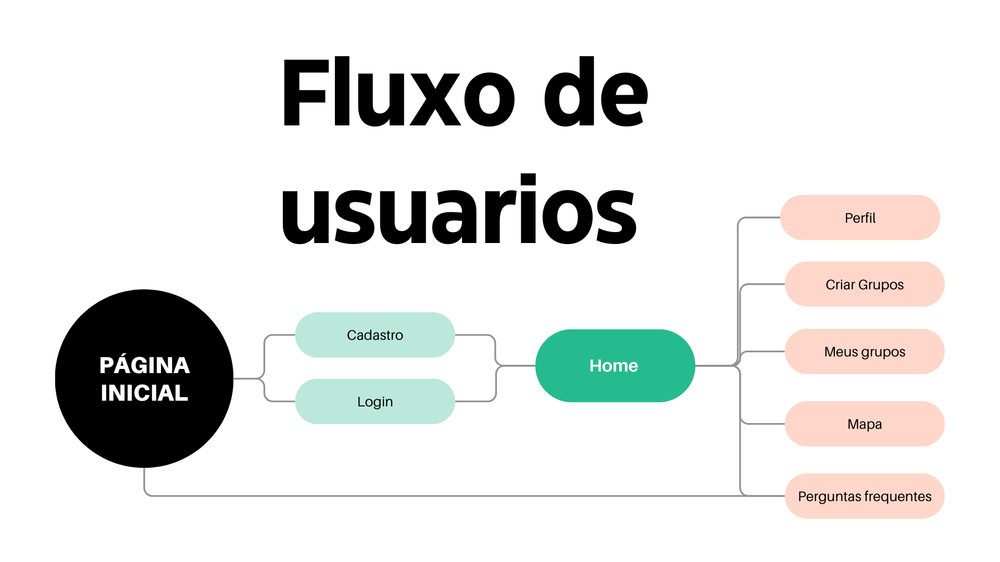
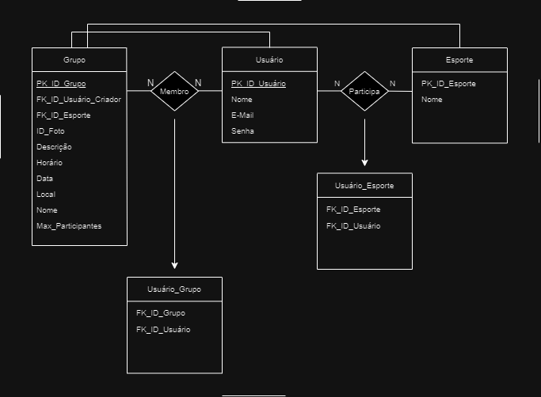

Descrição Geral
A vida universitária é uma fase de transição repleta de desafios e oportunidades. Para muitos estudantes, especialmente os calouros, adaptar-se a um novo ambiente social e acadêmico pode ser uma tarefa intimidadora. Além das responsabilidades acadêmicas, é essencial que os alunos tenham oportunidades para socializar, relaxar e manter um estilo de vida saudável. Entretanto, encontrar pessoas com interesses semelhantes, especialmente em atividades físicas, pode ser difícil, principalmente para aqueles que ainda não estabeleceram uma rede de contatos no campus. MatchPoint surge como uma solução para esse problema. A plataforma é dedicada a conectar grupos de pessoas interessadas em praticar esportes na PUC Minas, abrangendo toda a comunidade universitária. Seja você um atleta experiente ou alguém que está começando no mundo dos esportes, MatchPoint é o lugar ideal para encontrar parceiros, fazer novas amizades e manter uma vida ativa e saudável.
Problema
Na PUC Minas, assim como em muitas outras universidades, a prática de esportes desempenha um papel crucial no bem-estar físico e mental dos estudantes. No entanto, muitos alunos enfrentam dificuldades para encontrar colegas com quem possam praticar esportes ou formar equipes. Isso é especialmente desafiador para calouros, que estão em processo de adaptação ao ambiente universitário e ainda não têm uma rede social consolidada. Como resultado, muitos estudantes acabam perdendo oportunidades de se engajar em atividades físicas, apesar do desejo de participar.
Público Alvo
Embora o MatchPoint tenha como foco principal os universitários da PUC Minas, a plataforma está aberta a qualquer pessoa interessada em encontrar parceiros para a prática de esportes. Isso inclui estudantes de outras instituições e membros da comunidade que desejam se envolver em atividades físicas.
Principais Motivações
As principais motivações para a criação do MatchPoint estão profundamente enraizadas na necessidade de melhorar a experiência social e física dos estudantes universitários, especialmente em ambientes onde a integração social pode ser um desafio. Essas motivações incluem:
- Facilitar a Integração Social: Muitos calouros e estudantes enfrentam dificuldades para se integrar socialmente ao ingressar na universidade, principalmente devido à falta de conexões prévias. MatchPoint visa facilitar essa integração, proporcionando uma plataforma onde os estudantes podem conhecer novas pessoas com interesses comuns, especialmente no campo esportivo.
- Promover a Saúde e Bem-Estar: A prática regular de esportes é essencial para manter um estilo de vida saudável, contribuindo para o bem-estar físico e mental. A plataforma incentiva os estudantes a se manterem ativos, oferecendo uma maneira fácil de encontrar parceiros para a prática de esportes e, assim, combater o sedentarismo.
- Criar uma Comunidade Inclusiva: MatchPoint tem como objetivo criar um ambiente inclusivo onde todos, independentemente de seu nível de habilidade esportiva, sintam-se bem-vindos. A plataforma é motivada pela vontade de oferecer um espaço onde tanto atletas experientes quanto iniciantes possam se conectar e participar de atividades esportivas sem medo de julgamento.
- Ajudar a Superar Barreiras Logísticas: Organizar partidas e encontrar pessoas para formar equipes pode ser um desafio logístico para muitos estudantes. MatchPoint simplifica esse processo, permitindo que os usuários se conectem de maneira rápida e eficiente, superando as barreiras que muitas vezes impedem a prática esportiva.
- Fomentar a Criação de Novas Amizades: Além de promover a prática de esportes, a plataforma também é motivada pelo desejo de criar laços sociais duradouros entre os usuários. A prática esportiva em grupo é uma excelente oportunidade para formar novas amizades, e MatchPoint quer ser o facilitador desse processo.
- Contribuir para o Desenvolvimento Pessoal e Acadêmico: Acreditamos que a interação social e a prática de esportes contribuem significativamente para o desenvolvimento pessoal dos estudantes. Ao proporcionar um ambiente em que esses aspectos são incentivados, MatchPoint ajuda a criar uma experiência universitária mais completa e enriquecedora, que vai além das atividades acadêmicas.
Objetivo
O objetivo central do MatchPoint é facilitar a conexão entre pessoas que compartilham o interesse por esportes. Ao promover essa interação, a plataforma não apenas ajuda a formar times e organizar partidas, mas também desempenha um papel vital no bem-estar físico, social e emocional dos seus usuários. Ao facilitar a prática de esportes, o MatchPoint contribui para a criação de um ambiente universitário mais saudável, colaborativo e inclusivo.
Impacto na Sociedade
- Integração Social e Conexões Pessoais: A plataforma proporcionará uma oportunidade única para os estudantes, especialmente calouros, se conectarem com pessoas que compartilham interesses semelhantes. Ao facilitar a formação de grupos esportivos, MatchPoint ajudará a reduzir o isolamento social, incentivando a criação de novas amizades e redes de apoio dentro da universidade.
- Melhoria da Saúde Física e Mental: A prática regular de esportes é crucial para a manutenção da saúde física e mental. Ao simplificar o processo de encontrar parceiros e organizar atividades esportivas, MatchPoint incentivará os usuários a se manterem ativos, contribuindo para um estilo de vida mais saudável e equilibrado. Isso também pode ajudar a reduzir o estresse e a ansiedade, comuns no ambiente universitário.
- Inclusão e Acolhimento: MatchPoint será uma plataforma inclusiva, acolhendo tanto atletas experientes quanto iniciantes. Isso criará um ambiente em que todos se sentirão à vontade para participar de atividades esportivas, independentemente de suas habilidades ou nível de experiência, promovendo a inclusão e o respeito entre os usuários.
- Facilidade de Organização de Atividades: O site tornará mais fácil para os estudantes organizarem partidas e eventos esportivos. Isso reduzirá as barreiras logísticas e tornará a prática de esportes mais acessível, permitindo que mais pessoas participem ativamente.
- Desenvolvimento de Habilidades Sociais e de Trabalho em Equipe: Através das interações proporcionadas pela plataforma, os usuários terão a oportunidade de desenvolver habilidades sociais e de trabalho em equipe, que são essenciais tanto para a vida acadêmica quanto para a futura vida profissional.
- Fortalecimento da Comunidade Universitária: Ao conectar estudantes através do esporte, MatchPoint contribuirá para o fortalecimento da comunidade universitária como um todo. Isso promoverá um senso de pertencimento entre os alunos, o que pode levar a uma experiência universitária mais positiva e satisfatória.
Diferencial
O MatchPoint se destaca por ser a única plataforma que facilita a interação social entre universitários por meio da prática esportiva. Isso é especialmente útil para calouros que, apesar de gostarem de esportes, ainda não conhecem muitas pessoas na faculdade. Ao oferecer um ambiente seguro e inclusivo, o MatchPoint torna a integração ao campus mais fácil e agradável.
Sustentabilidade
O MatchPoint se sustentará por meio de um modelo de negócios baseado em propagandas. Acreditamos que, ao oferecer uma plataforma gratuita para os usuários, podemos maximizar a participação e o engajamento, tornando o site acessível a todos os estudantes da PUC Minas e outras instituições. Para garantir a viabilidade financeira do projeto e permitir que continuemos a oferecer e aprimorar nossos serviços, implementaremos um sistema de anúncios publicitários.
Fluxo de Usuários
Link para o protótipo interativo
Entidades e Relacionamentos
- USUÁRIO:
- Cada usuário é uma pessoa que se cadastra no sistema com o intuito de praticar esportes em grupo.
- Informações armazenadas: identificador único (PK_ID_Usuario), nome, e-mail e senha.
- Um usuário pode criar grupos e participar de múltiplos esportes e grupos.
- ESPORTE:
- O sistema armazena os esportes disponíveis para serem praticados pelos usuários.
- Cada esporte é identificado por um código único (PK_ID_Esporte) e tem um nome associado.
- Opcionalmente, pode haver um campo que define o número máximo de participantes permitidos para cada esporte.
- Esportes podem ser associados a múltiplos grupos e múltiplos usuários.
- GRUPO:
- Os grupos são formados para organizar a prática de um esporte específico por um conjunto de usuários.
- Cada grupo é identificado por um código único (PK_ID_Grupo).
- Possui um criador (FK_ID_Usuario_Criador), que é um usuário responsável pela criação do grupo.
- Cada grupo está associado a um esporte específico (FK_ID_Esporte).
- Informações adicionais: descrição do grupo, horário, data, local, nome do grupo, número máximo de participantes permitidos (Max_Participantes), e uma possível foto associada (ID_Foto).
- Um grupo pode ter múltiplos membros, mas sempre é criado por um único usuário e está vinculado a um único esporte.
- USUÁRIO_ESPORTE (Relacionamento "Participa"):
- Relacionamento muitos-para-muitos que captura quais usuários praticam quais esportes.
- A tabela Usuário Esporte armazena essas associações por meio de duas chaves estrangeiras (FK_ID_Esporte e FK_ID_Usuario).
- Permite que um usuário esteja associado a múltiplos esportes e que um esporte seja praticado por múltiplos usuários.
- USUÁRIO_GRUPO (Relacionamento "Membro"):
- Relacionamento muitos-para-muitos que captura a participação dos usuários nos grupos.
- A tabela Usuario_Grupo armazena essas associações por meio de duas chaves estrangeiras (FK_ID_Grupo e FK_ID_Usuario).
- Permite que um grupo tenha vários membros e que um usuário participe de múltiplos grupos.
- REGRAS:
- Cada grupo deve ser associado a um único esporte e ter um único criador, mas pode ter vários membros.
- Um usuário pode praticar diversos esportes, e cada esporte pode ser praticado por vários usuários.
- Um usuário pode criar e participar de vários grupos, e cada grupo pode ter vários usuários como membros.
- Dados adicionais: ID_Foto, Descrição, Horário, Data, Local, Nome e Max_Participantes enriquecem a descrição e organização de cada grupo.
Recursos de Inteligência Artificial
- Recepção da Imagem: O usuário envia uma foto capturada durante uma atividade esportiva para a plataforma.
- Análise da Imagem: A inteligência artificial processa a foto, analisando características visuais distintas associadas a diferentes esportes. Isso inclui elementos como equipamentos esportivos (ex.: bola, raquete), locais específicos (ex.: quadra, campo) e ações típicas de cada esporte.
- Classificação e Identificação: Com base na análise, o sistema compara as características visuais identificadas com um banco de dados de imagens esportivas pré-cadastradas. O algoritmo utiliza técnicas de aprendizado de máquina para determinar o esporte com maior precisão.
- Resultados: O site irá disponibilizar uma pequena descrição do esporte que foi identificado.